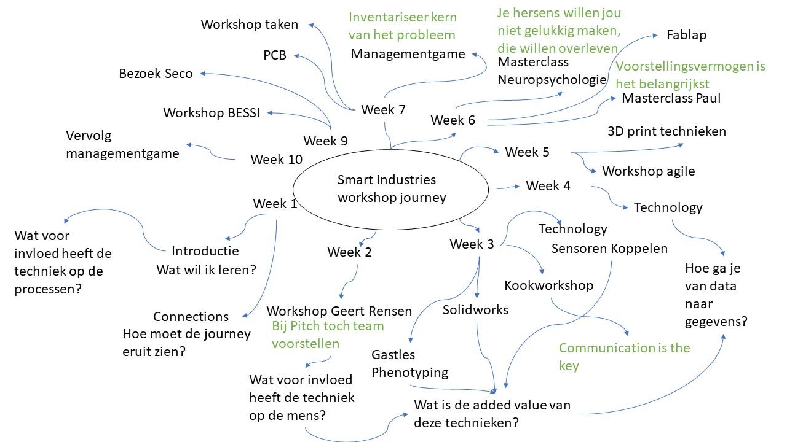

Home page
Opdrachten
Learning journey
Project
Workshop journey
Tijdens de minor heb ik veel verschillende workshops gevolgd. In de afbeelding hieronder is te zien welke workshops ik heb gevolgd.
De belangrijkste light bulp momenten heb ik groen gemaakt. Ook heb ik na de workshops een aantal leervragen en onderwerpen geforumuleerd waarover ik meer wil leren gedurende de minor
Daarnaast heb ik mij verdiept in nieuwe technieken de workshops , zoals een Iot schakeling bouwen en onderwerpen zoals Bessi en verandermanagement
Hiermee laat ik zien dat ik bewust bezig ben met mijn persoonlijke groei, mij verdiep in onderwerpen buiten mijn vakgebied en initiatief en betrokkenheid toon
Project journey
Tijdens de minor heb gewerkt aan een project. Tijdens dit project heb ik mijn kennis over verschillende bedrijfskundige onderwerpen zoals het 9-vlaks model
Hiermee wil ik aantonen dat ik actief help om andere te groeien door mijn kennis te delen. van Meas gedeeld met Thomas. Ik heb ter verbreding van mijn kennis gewerkt aan illustraties en ontwerpen.
Tijdens het project hebben Thomas en ik elkaar peer feedback gegeven
Een van de tips van Thomas was dat ik af en toe ook onderwerpen en werk naast mij neer mag leggen. Dat deligeren niet erg is.
Het advies is gebasseerd op zowel literatuur onderzoek, als document analysis, enquete en interviews.
Hiermee laat ik zien dat ik mij buiten mijn confortzone bevind, dat ik open sta voor feedback. Dat het advies aan het bedrijf gebasseerd is op gedegen onderzoek.
Ik de onderstaande illustratie is te zien met welke onderwerpen ik bezig ben geweest gedurende het project. De light bulp momenten heb ik groen gekleurd.

Welkom bij mijn learning journey
De belangrijkste light bulp momenten heb ik groen gemaakt. Ook heb ik na de workshops een aantal leervragen en onderwerpen geforumuleerd waarover ik meer wil leren gedurende de minor
Daarnaast heb ik mij verdiept in nieuwe technieken de workshops , zoals een Iot schakeling bouwen en onderwerpen zoals Bessi en verandermanagement
Hiermee laat ik zien dat ik bewust bezig ben met mijn persoonlijke groei, mij verdiep in onderwerpen buiten mijn vakgebied en initiatief en betrokkenheid toon

Hiermee wil ik aantonen dat ik actief help om andere te groeien door mijn kennis te delen. van Meas gedeeld met Thomas. Ik heb ter verbreding van mijn kennis gewerkt aan illustraties en ontwerpen.
Tijdens het project hebben Thomas en ik elkaar peer feedback gegeven
Een van de tips van Thomas was dat ik af en toe ook onderwerpen en werk naast mij neer mag leggen. Dat deligeren niet erg is.
Het advies is gebasseerd op zowel literatuur onderzoek, als document analysis, enquete en interviews.
Hiermee laat ik zien dat ik mij buiten mijn confortzone bevind, dat ik open sta voor feedback. Dat het advies aan het bedrijf gebasseerd is op gedegen onderzoek.
Ik de onderstaande illustratie is te zien met welke onderwerpen ik bezig ben geweest gedurende het project. De light bulp momenten heb ik groen gekleurd.